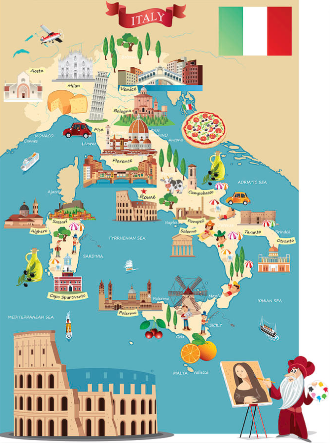

 A Cultura da Itália é famosa pela sua arte e pelos seus monumentos, entre os quais se encontram a Torre de Pisa, o Coliseu de Roma, bem como pela sua comida (pizza, pasta, etc.), vinho, estilo de vida, elegância, design, cinema, teatro, literatura, poesia, artes plásticas, música (especialmente a Ópera), e, de uma forma geral, por aquilo que é considerado por muita gente "bom gosto". Itália é considerada o berço da civilização ocidental e uma superpotência cultural. A Itália tem sido o ponto de partida de fenómenos de impacto internacional como a Magna Graecia, o Império Romano, a Igreja Católica Romana, o Renascimento, o Risorgimento e a integração europeia. Durante sua história, a nação deu à luz um número enorme de pessoas notáveis. As faces internas e externas da cultura ocidental nasceram na península italiana, quer se trate da história da fé cristã, das instituições civis (como o Senado), da filosofia, do direito, da arte, da ciência ou dos costumes sociais e cultura. A Itália era o lar de muitas civilizações bem conhecidas e influentes, incluindo os etruscos, samnitas e romanos, ao mesmo tempo hospedando colônias de importantes civilizações estrangeiras como os fenícios e gregos, cuja influência e cultura tiveram um grande impacto através da península. As culturas etrusca e samnita floresceram na Itália antes do surgimento da República Romana, que os conquistou e incorporou. Fenícios e gregos estabeleceram assentamentos na Itália começando vários séculos antes do nascimento de Cristo, e os assentamentos gregos, em particular, desenvolveram-se em florescente civilizações clássicas. As ruínas gregas no sul da Itália são talvez o mais espetacular e melhor preservado em qualquer lugar. O país possui várias cidades mundialmente famosas. Roma era a antiga capital do Império Romano e sede do Papa da Igreja Católica. Florença foi o coração do Renascimento, um período de grandes realizações nas artes no final da Idade Média. Outras cidades importantes incluem Turim, que costumava ser a capital da Itália, e é agora um dos grandes centros do mundo de engenharia automobilística. Milão é a capital industrial, financeira e de moda da Itália. Veneza, com seu intrincado sistema de canais, atrai turistas de todo o mundo, especialmente durante o Carnaval de Veneza e a Bienal. A Itália é o lar do maior número de Patrimônios da Humanidade da UNESCO, e de acordo com uma estimativa o país é o lar de metade dos grandes tesouros de arte do mundo. A nação tem, em geral, cerca de 100.000 monumentos de qualquer espécie (igrejas, catedrais, sítios arqueológicos, casas e estátuas).